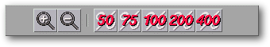

<!-- Documentation XQuad (c)1995-2000 AXENE contact axene@axene.org>
<html>

<head>
<title>Barre horizontale d'icônes &quot;Zoom&quot;</title>
</head>

<body BGCOLOR="#FFFFFF" BACKGROUND="Images/back.gif" TEXT="#000000">

<p ALIGN="right">  </p>

<p><br>
<br>
La barre d'icônes 'Zoom' propose des outils qui modifient le facteur d'agrandissement de
la vue sur la feuille de calcul active. Le facteur d'agrandissement est conservé pour
chaque feuille de calcul ouverte. <br>
<br>
</p>

<hr>

<p align="center"><br>
 <br>
<small><i>Photo d'écran : Barre d'icônes Zoom. </i></small></p>

<p><br>
</p>

<hr>

<p><br>
</p>

<h3>Première section de la barre d'icônes :</h3>

<ul>
  <li><a NAME="zoom_plus_icon"> le premier bouton icône
    permet d'<b>augmenter le facteur de zoom de 25%</b>. Le facteur de zoom est limité au
    maximum à 400%. Si cette limite est atteinte, ce bouton icône n'a plus d'effet. </a><br>
    &nbsp; </li>
  <li> <a NAME="zoom_minus_icon">le deuxième bouton
    icône permet de <b>réduire le facteur de zoom de 25%</b>. Le facteur de zoom est limité
    au minimum à 50%. Si cette limite est atteinte, ce bouton icône n'a plus d'effet. </a></li>
</ul>

<p><br>
</p>

<h3>Seconde section de la barre d'icônes :</h3>

<ul>
  <li><a NAME="predefined_scale_icons"> les cinq boutons
    icônes permettent d'initialiser le facteur d'agrandissement à respectivement 50%, 75%,
    100%, 200% et 400%. </a></li>
</ul>

<p><br>
</p>

<hr>

<p ALIGN="right"></p>
</body>
</html>
